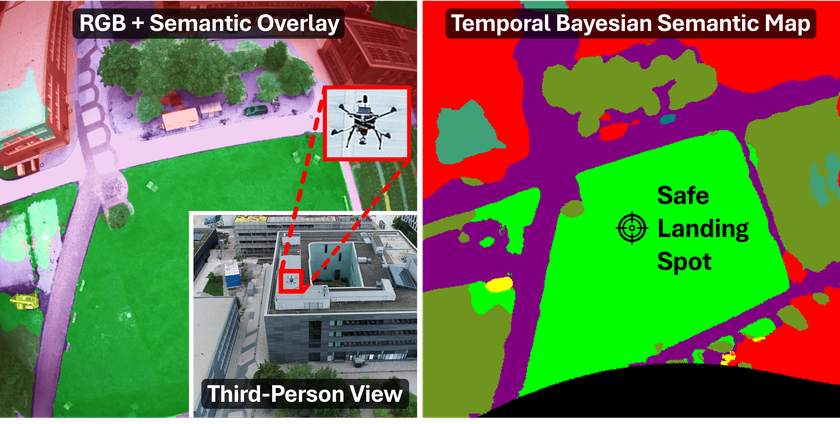
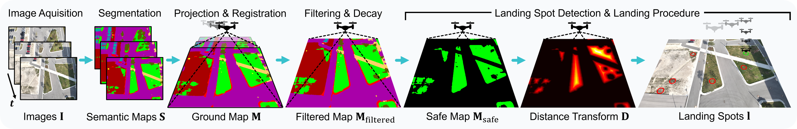
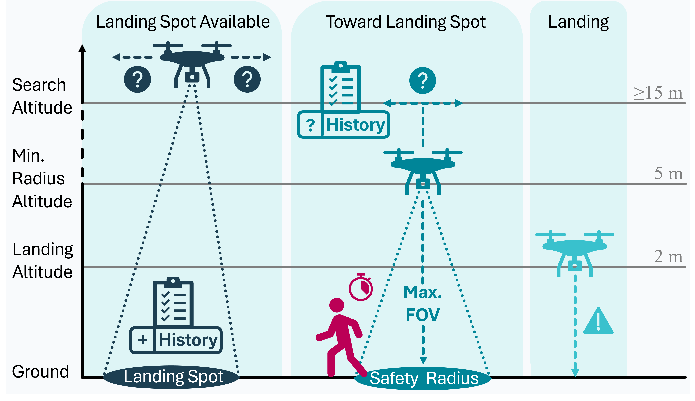
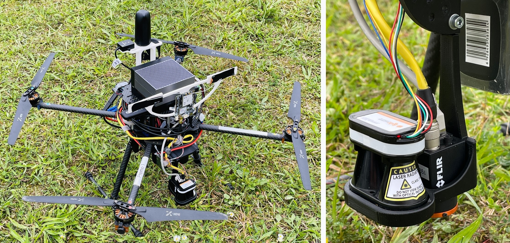
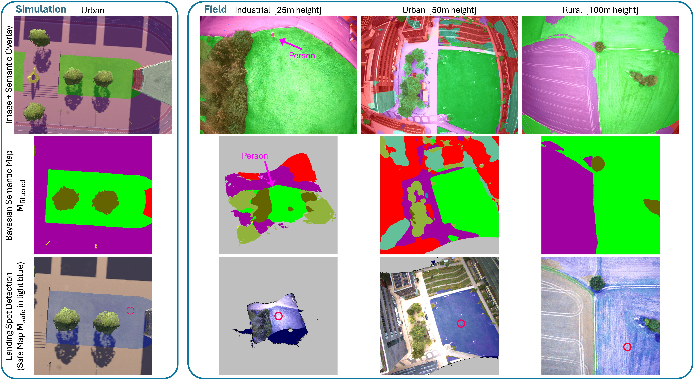
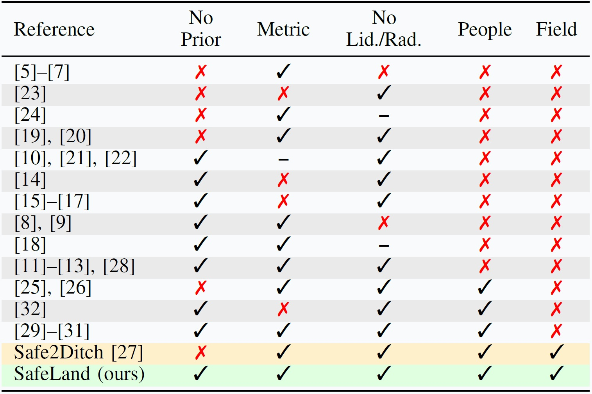
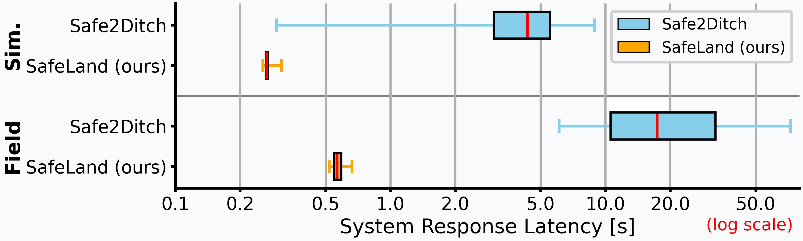

SafeLand: Safe Autonomous Landing in Unknown Environments with Bayesian Semantic Mapping
Tip: Unmute the video to listen to a 1 minute summary of SafeLand.
- Works in urban, industrial, and rural environments
- Handles dynamic obstacles like humans
- Achieves 95% success rate with sub-second reaction time
Abstract
Autonomous landing of uncrewed aerial vehicles (UAVs) in unknown, dynamic environments poses significant safety challenges, particularly near people and infrastructure, as UAVs transition to routine urban and rural operations. Existing methods often rely on prior maps, heavy sensors like LiDAR, static markers, or fail to handle non-cooperative dynamic obstacles like humans, limiting generalization and real-time performance. To address these challenges, we introduce SafeLand, a lean, vision-based system for safe autonomous landing (SAL) that requires no prior information and operates only with a camera and a lightweight height sensor. Our approach constructs an online semantic ground map via deep learning-based semantic segmentation, optimized for embedded deployment and trained on a consolidation of seven curated public aerial datasets (achieving 70.22% mIoU across 20 classes), which is further refined through Bayesian probabilistic filtering with temporal semantic decay to robustly identify metric-scale landing spots. A behavior tree then governs adaptive landing, iteratively validates the spot, and reacts in real time to dynamic obstacles by pausing, climbing, or rerouting to alternative spots, maximizing human safety. We extensively evaluate our method in 200 simulations and 60 end-to-end field tests across industrial, urban, and rural environments at altitudes up to 100m, demonstrating zero false negatives for human detection. Compared to the state of the art, SafeLand achieves sub-second response latency, substantially lower than previous methods, while maintaining a superior success rate of 95%. To facilitate further research in aerial robotics, we release SafeLand's segmentation model as a plug-and-play ROS package.
Overview

🆘 Challenge
Autonomous landing is one of the most safety-critical challenges for UAVs, especially in unknown and dynamic environments. Existing systems often:
- rely on prior maps or prepared landing zones
- depend on heavy sensors (LiDAR, radar)
- fail to handle non-cooperative dynamic obstacles
💡 Solution
We introduce a vision-based landing system that:
- builds a semantic understanding of the ground in real time
- converts it into a metric landing map
- filters uncertainty over time
- reacts adaptively during landing
Method

- Semantic Scene Understanding: A lightweight aerial segmentation network predicts pixel-wise semantic classes from RGB images, distinguishing safe and unsafe landing regions.
- Metric Ground Projection: The semantic predictions are projected onto a metric ground plane using height measurements to resolve scale ambiguity.
- Bayesian Semantic Mapping: Observations are fused over time into a probabilistic map, incorporating temporal filtering and semantic decay to handle noise and dynamic changes.
- Landing Site Selection: Candidate landing areas are identified based on safety, size constraints, and temporal consistency within the map.
- Adaptive Landing Strategy: A behavior tree continuously evaluates the selected landing site and dynamically reacts to environmental changes during descent.

Experiments

⚙️ Setup
- 200 simulations
- 60 end-to-end field tests
- Urban, industrial and rural environments
- Altitudes up to 100m
- Deliberate human interference to test safety
✅ Results
- 95% landing success rate
- Sub-second reaction time
- Robust across diverse environments
- Safe for humans and property
- Outperforms state-of-the-art methods

SafeLand in Comparison
SafeLand advances beyond existing and state-of-the-art UAV landing approaches by unifying real-time semantic understanding, probabilistic mapping, and adaptive decision-making within a lightweight system. In contrast to methods that depend on prior maps, dedicated landing zones, or heavy sensing such as LiDAR, SafeLand operates using only an onboard RGB camera and a height sensor while constructing an online semantic ground map of previously unseen environments. Its Bayesian temporal filtering with semantic decay ensures robustness against noise and dynamic changes, while an adaptive behavior tree enables safe and reactive landing in the presence of moving obstacles, including humans. This combination yields a solution that is not only more scalable and deployable, but also demonstrably more reliable and safety-aware, as evidenced by extensive real-world validation and consistently safe human interaction without missed detections.


BibTeX
@misc{gross2026safeland,
title={SafeLand: Safe Autonomous Landing in Unknown Environments with Bayesian Semantic Mapping},
author={Markus Gross and Andreas Greiner and Sai Bharadhwaj Matha and Felix Soest and Daniel Cremers and Henri Meeß},
year={2026},
eprint={2603.17430},
archivePrefix={arXiv},
primaryClass={cs.RO},
url={https://arxiv.org/abs/2603.17430},
}